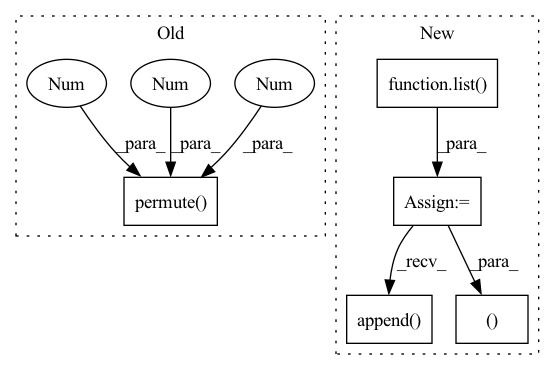

Pattern ID :396

Before Change
for logits, codes in zip(allLogits, allTrues):
// rand = torch.randint_like(codes, logits.shape[-1])
// regLoss.append(self._auxLoss(logits.permute(0, 4, 1, 2, 3), rand))
mleLoss.append(self._auxLoss(logits.permute(0, 4, 1, 2, 3), codes))
// self._movingMean -= 0.9 * (self._movingMean - ssimLoss.mean())
// pLoss = self._pLoss(image, restored)
After Change
// regLoss = list()
weakCodebookLoss = list()
weakFeatureLoss = list()
for features, codebooks in zip(allFeatures, allCodebooks):
for codebook in codebooks:
// [k, k] := [k, c] @ [c, k]
innerProduct = codebook @ codebook.T
// orthogonal regularization
weakCodebookLoss.append(self._auxLoss(innerProduct, torch.eye(innerProduct.shape[0], device=innerProduct.device, dtype=innerProduct.dtype)))
m = len(features)
for i in range(m):
for j in range(i + 1, m):
// [n, h, w] := ([n, c, h, w] * [n, c, h, w]).sum(1)
interProduct = (features[i] * features[j]).sum(1)
// feature from different group should be orthogonal
weakFeatureLoss.append(2 * self._auxLoss(interProduct, torch.zeros_like(interProduct)))
intraProduct = (features[i] * features[i]).sum(1)
weakFeatureLoss.append(self._auxLoss(intraProduct, torch.ones_like(intraProduct)))
// self._movingMean -= 0.9 * (self._movingMean - ssimLoss.mean())
// pLoss = self._pLoss(image, restored)
return dLoss, (sum(weakCodebookLoss), sum(weakFeatureLoss)), (restored, allTrues, allLogits)
class WholePQQ(nn.Module):
In pattern: SUPERPATTERN
Frequency: 3
Non-data size: 5
Instances
Fragment ID: 1548055
Project Name: xiaosu-zhu/mcquic
Commit Name: 5967dc842a3104290343634f567426a0fd77febe
Time: 2021-10-18
Author: xiaosu.zhu@outlook.com
File Name: src/mcqc/models/whole.py
M Class Name: WholePQBig
N Class Name: WholePQBig
M Method Name: forward(3)
N Method Name: forward(3)
M Parent Class: nn.Module
N Parent Class: nn.Module
M File Name: src/mcqc/models/whole.py
N File Name: src/mcqc/models/whole.py
M Start Line: 41
M End Line: 50
N Start Line: 37
N End Line: 63
'>
Before Change
for x, net, codebook, k in zip(latents, self._prob, self._codebook, self._k):
n, c, h, w = x.shape
// [n, c, h, w] -> [h, w, n, c] -> [h*w, n, c]
x = self._encoder(x.permute(2, 3, 0, 1).reshape(-1, n, c))
// [h*w, n, k] -> [n, h*w, k]
logit = net(x).permute(1, 0, 2)
sample = F.gumbel_softmax(logit * self._d, temperature, hard)
After Change
quantizeds = list()
samples = list()
logits = list()
targets = list()
for xRaw, net, codebook, k in zip(latents, self._prob, self._codebook, self._k):
targets.append(xRaw)
n, c, h, w = xRaw.shape
// [n, c, h, w] -> [h, w, n, c] -> [h*w, n, c]
encoderIn = xRaw.permute(2, 3, 0, 1).reshape(-1, n, c)
x = self._encoder(encoderIn)
// [h*w, n, k] -> [n, h*w, k]
logit = net(x).permute(1, 0, 2)
sample = F.gumbel_softmax(logit * self._d, temperature, hard)
// [N, h*w, c] <- [N, h*w, k] @ [k, C]
quantized = codebook(sample)
// [n, h*w, c] -> [h*w, n, c]
quantized = quantized.permute(1, 0, 2)
mixed = temperature * encoderIn / (temperature + 1) + quantized / (temperature + 1)
// [h*w, n, c] -> [n, h*w, c] -> [n, h, w, c]
deTransformed = self._decoder(mixed, quantized).permute(1, 0, 2).reshape(n, h, w, c)
// [n, c, h, w]
quantizeds.append(deTransformed.permute(0, 3, 1, 2))
samples.append(sample)
logits.append(logit.reshape(n, h, w, k).permute(0, 3, 1, 2))
return quantizeds, targets, samples, logits
// @Module.register("quantize")
// def _quantize(self, logits, temperature, hard):
// logits = logits.permute(0, 2, 3, 1)
'>
Fragment ID: 1548032
Project Name: xiaosu-zhu/mcquic
Commit Name: 1651f1f4f7d28d9afa1ca7abafa2af0d6140309a
Time: 2021-01-14
Author: xiaosu.zhu@outlook.com
File Name: src/mcqc/models/quantizer.py
M Class Name: TransformerQuantizer
N Class Name: TransformerQuantizer
M Method Name: forward(4)
N Method Name: forward(4)
M Parent Class: nn.Module
N Parent Class: nn.Module
M File Name: src/mcqc/models/quantizer.py
N File Name: src/mcqc/models/quantizer.py
M Start Line: 101
M End Line: 120
N Start Line: 101
N End Line: 126
'>
Before Change
// [n, k], 3σ rule
bernoulli = Bernoulli(logits=meanLogit - 3.0)
// [h*w, n, k] -> [n, h*w, k] (0 or 1 -> choose or not choose)
randomFalseMask = bernoulli.sample((logit.shape[1], )).permute(1, 0, 2)
randomFalseMask *= -1e9
bernoulli = Bernoulli(logits=-meanLogit - 3.0)
randomTrueMask = bernoulli.sample((logit.shape[1], )).permute(1, 0, 2)
randomTrueMask *= 1e9
After Change
quantizeds = list()
codes = list()
logits = list()
xs = list()
for xRaw in latents:
n, c, h, w = xRaw.shape
// [1, k, c]
codebook = getattr(self, "codebook")[None, ...]
// [n, c, h, w] -> [n, h, w, c]
encoderIn = xRaw.permute(0, 2, 3, 1)
// [n, h, w, c] -> [n, h*w, c]
encoderIn = self._position(encoderIn).reshape(n, -1, c)
// [1, k, c]
codebookQ = self._codebookQuery(codebook)
// [n, h*w, c]
x = self._encoder(encoderIn, codebookQ)
xs.append(x)
// [n, h*w, k]
logit = self._select(x)
// [k]
bernoulli = Bernoulli(probs=maskProb)
// [n, h*w, k] (0 or 1 -> choose or not choose)
randomFalseMask = bernoulli.sample((n, h*w, )).bool()
maskedLogit = logit.masked_fill(randomFalseMask, -1e9)
// randomFalseMask *= -1e9
// maskedLogit = logit + randomFalseMask // + randomTrueMask
sample = F.gumbel_softmax(maskedLogit, 1.0, True)
// [1, k, c]
codewords = self._codebookEncoder(codebook)
// [n, h*w, c]
quantized = sample @ codewords[0, ...]
// [n, h*w, c]
posistedQuantized = self._position(quantized.reshape(n, h, w, c)).reshape(n, -1, c)
// [1, k, c]
decodedCodes = self._codebookDecoder(codebook)
// [n, c, h, w]
deTransformed = self._decoder(posistedQuantized, decodedCodes).reshape(n, h, w, c).permute(0, 3, 1, 2)
// [n, c, h, w]
quantizeds.append(deTransformed)
codes.append(sample.argmax(-1).reshape(n, h, w))
logits.append(logit.reshape(n, h, w, -1))
return quantizeds, codes, logits, xs
'>
Fragment ID: 1548060
Project Name: xiaosu-zhu/mcquic
Commit Name: ff056abb47b531e42496967adda543c562e1cefd
Time: 2021-05-12
Author: xiaosu.zhu@outlook.com
File Name: src/mcqc/models/quantizer.py
M Class Name: TransformerQuantizer
N Class Name: TransformerQuantizer
M Method Name: forward(3)
N Method Name: forward(3)
M Parent Class: nn.Module
N Parent Class: nn.Module
M File Name: src/mcqc/models/quantizer.py
N File Name: src/mcqc/models/quantizer.py
M Start Line: 505
M End Line: 554
N Start Line: 508
N End Line: 554